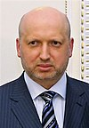

Україна
Україна Государственное устройство
Государственный строй Украины определён Конституцией, принятой парламентом 28 июня 1996 года.
Украина представляет собой унитарную парламентско-президентскую республику. Правительство — Кабинет министров Украины. Высший законодательный орган — Верховная рада Украины.
Сразу после провозглашения независимости Украины, благодаря референдуму 1991 года, на Украине была образована парламентская комиссия по подготовке новой конституции. 28 июня 1996 года, с принятием новой демократической конституции, была основана многопартийная политическая система (плюрализм) и декларированы основные права и свободы граждан Украины, а также национальных меньшинств страны.
Согласно Конституции, государственным языком на Украине является украинский язык. Этническим группам населения Украины гарантируется право на получение образования на родном языке, на развитие культуры, а также на поддержку и использование национальных языков в повседневной жизни. Сфера и масштабы применения украинского языка определены Законом от 25 апреля 2019 года № 2704-VIII «Об обеспечении функционирования украинского языка как государственного».
Государственная власть
Статья 6 Конституции Украины устанавливает, что государственная власть на Украине осуществляется по принципу её разделения на законодательную, исполнительную и судебную. Органы законодательной, исполнительной и судебной власти осуществляют свои полномочия в установленных настоящей Конституцией пределах и в соответствии с законами Украины.
Исполнительная власть
Исполнительную власть на Украине осуществляют президент Украины и Кабинет министров Украины — правительство.
Президент Украины
Главой украинского государства, согласно статье 102 Конституции Украины, является президент Украины. Президент Украины является гарантом государственного суверенитета, территориальной целостности Украины, соблюдения Конституции Украины, прав и свобод человека и гражданина. В установленном конституцией порядке он обеспечивает государственную независимость и безопасность государства. В соответствии с Конституцией Украины президент осуществляет руководство внешнеполитической деятельностью государства.
Список пезидентов Украины
| № | Срок | Фото | Фамилия Имя Отчество | Срок полномочий | |
|---|---|---|---|---|---|
| 1 | 1 |  |
Леонид Макарович Кравчук | 5 декабря 1991 | 19 июля 1994 |
| 2 | 1 | Леонид Данилович Кучма | 19 июля 1994 | 14 ноября 1999 | |
| 2 | 14 ноября 1999 | 23 января 2005 | |||
| 3 | 1 | Виктор Андреевич Ющенко | 23 января 2005 | 25 февраля 2010 | |
| 4 | 1 | Виктор Фёдорович Янукович | 25 февраля 2010 | 22 февраля 2014 | |
| - | - |  | Александр Валентинович Турчинов (исполняющий обязанности) |
23 февраля 2014 | 7 июня 2014 |
| 5 | 1 | Петр Алексеевич Порошенко | 7 июня 2014 | 20 мая 2019 | |
| 6 | 1 |  |
Владимир Александрович Зеленский | 20 мая 2019 | в должности |
Кабинет министров Украины
Кабинет министров Украины является правительством Украины и, согласно статье 113 Конституции Украины, высшим органом в системе органов исполнительной власти государства.
Премьер-министр Украины назначается Верховной Радой Украины по представлению президента Украины. В свою очередь, представление президента Украины основывается на предложении коалиции депутатских фракций в Верховной Раде Украины, сформированной в соответствии со статьей 83 Конституции Украины, или депутатской фракции, в состав которой входит большинство народных депутатов Украины от конституционного состава Верховной Рады Украины.
Согласно статье 116 Конституции Украины, Кабинет министров обеспечивает государственный суверенитет и экономическую самостоятельность Украины, осуществление внутренней и внешней политики государства, исполнение Конституции и законов Украины, актов Президента Украины.
Законодательная власть
Единственным органом законодательной власти на Украине является Верховная Рада Украины.